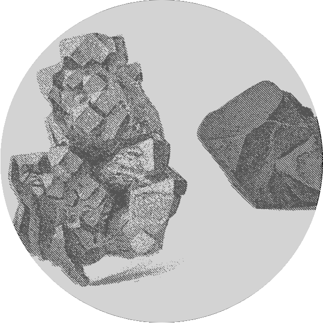
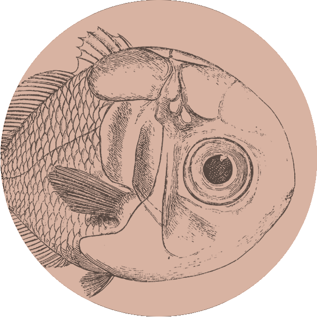
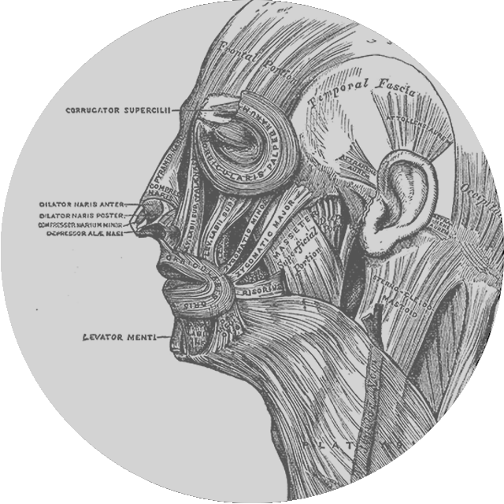

Museo Geomineralogico “Serra-Pietracaprina”
Nihil imperdiet doming id quod mazim placerat facer possim assum typi non habent claritatem insitam.

Collezione Anatomica
Nihil imperdiet doming id quod mazim placerat facer possim assum typi non habent claritatem insitam.

Collezione di Botanica
Nihil imperdiet doming id quod mazim placerat facer possim assum typi non habent claritatem insitam.

Collezione Zoologica
Nihil imperdiet doming id quod mazim placerat facer possim assum typi non habent claritatem insitam.
Collezione di Botanica Farmaceutica
Nihil imperdiet doming id quod mazim placerat facer possim assum typi non habent claritatem insitam.
Collezione Farmaco - chimico - tossicologica
Nihil imperdiet doming id quod mazim placerat facer possim assum typi non habent claritatem insitam.
Collezione di Veterinaria
Nihil imperdiet doming id quod mazim placerat facer possim assum typi non habent claritatem insitam.